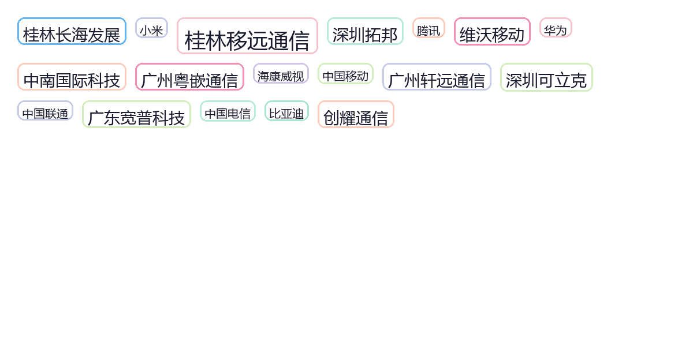

桂林电子科技大学
其他
返回上一级
📊 就业数据概览
用人单位满意度
100%
最主要行业
软件和IT服务
深圳占比
20.3%
珠三角+广西
主要去向
核心优势：
从2023届研究生毕业去向地区统计来看，桂林电子科技大学向
珠三角地区以及广西地区
源源不断送去优质人才。各个地区用人单位也对桂电应届毕业研究生具有高度评价，满意度高达
100%
。就业去向涵盖科研、医疗、教育、政府机关和各类企业，最为集中的去向为
软件和信息技术服务业
。大部分研究生去往薪资待遇较优的
民营企业
以及
国有企业
，如"
专精特新
"企业。
🏢 就业单位TOP10
1
桂林移远通信技术有限公司
2
维沃移动通信有限公司（vivo）
3
深圳可立克科技股份有限公司
4
桂林长海发展有限责任公司
5
广东宽普科技有限公司
6
广州粤嵌通信科技股份有限公司
7
创耀（苏州）通信科技股份有限公司
8
广州轩远通信科技有限公司
9
深圳拓邦股份有限公司
10
中南国际科技发展（深圳）有限公司
亮点：
TOP10中
通信技术类企业
占比极高，包括移远通信、维沃（vivo）、粤嵌通信、创耀通信、轩远通信等，充分体现桂电的
通信电子特色
。深圳企业占据4席（可立克、拓邦、中南国际），桂林本地企业2席（移远通信、长海发展），广州企业2席，体现
"立足广西、面向珠三角"
的就业格局。长海发展作为
军工/科研背景
企业，也体现国防特色。
🗺️ 就业地域分布（2023届）
深圳
20.3%
桂林
8.9%
南宁
8.7%
东莞
6.6%
广州
6.5%
惠州
4.4%
柳州
4.3%
佛山
3.0%
玉林
2.8%
珠海
~2%
解读：
深圳
以20.3%的绝对优势成为第一大就业目的地，作为珠三角科技中心，对桂电毕业生吸引力最大。
广西本地
（桂林8.9% + 南宁8.7% + 柳州4.3% + 玉林2.8%）合计约24.7%，与深圳相当，体现"
服务地方+面向全国
"的双重定位。珠三角城市（深圳+东莞+广州+惠州+佛山+珠海）合计占比约
45%
，是绝对的就业主战场。
🏛️ 就业单位性质
单位性质结构
其他企业
— 占比最大（民营企业为主）
国有企业
— 重要组成部分
三资企业
— 外资/合资企业
其他事业单位
高等教育单位
中初教育单位
机关
医疗卫生单位
科研设计单位
性质特点
民企为主
：其他企业（以民营企业为主）占比最大，符合桂电
应用型工科
定位。
国企+专精特新
：国有企业也是重要去向，且大部分研究生去往薪资待遇较优的民营企业和国有企业，如
"专精特新"
企业。
事业单位补充
：教育、医疗、科研等事业单位占比较小，整体呈现
"企业为主、体制内补充"
的结构。
☁️ 就业单位词云
基于就业质量报告数据生成的单位名称词云
